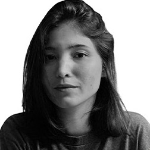

Designer

Designer gráfica formada pela UNIFG, com pós-graduação em Tecnologia, Inovação e Inteligência pela CESAR School. Crio desde 2018 para agências e marcas, do post no feed à embalagem, ao banner de palco e ao modelo 3D.
Edição de foto e vídeo, motion design e modelagem 3D.